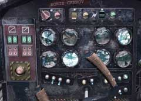
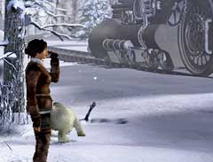
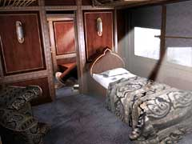

| 概要 | 地図 |
| 淡いヒント集 | ヒント集 | 的確なヒント集 |
| 攻略最短ルート |
| 場所選択に戻る |
雪山
|
いざ、機関車
操縦士のボリスを起こしたあなたは、機関車へすぐに戻る方法を教えてもらうだろう。それは、脱出装置を使うものであった。 ・緊急脱出装置に入力する座標を調べる ・脱出装置で機関車へ移動 ・オスカーを見つける ・オスカーの体調不良を治す ・機関車の客車を切り離す 
・Syberiaをプレーした方ならば、彼が何者か分かるだろう。 ・緊急脱出装置の使い方は簡単である。 ・座標を調べるにはどうしたらよいだろうか。

・座標を調べるには、数字を表示するものが必要となる。 ・無線設備の中にレーダーがあったのを覚えているだろうか? ・このレーダーを使えばうまくいきそうである。

・オスカーはどこにいるだろうか? ・客車にも操縦室にもいない。探してみよう。 ・オスカーの体調不良を治すにはどうしたらよいか? 彼はカラクリ人形である。薬や栄養ドリンクは必要ない。

・機関車の客車を切り離さなければならない。 ・ここでこの車両ともお別れである。 ・接続解除するにはどこを操作すればよいだろうか? オスカーの話をちゃんと聞けば簡単である。 |
| 場所選択に戻る |
| 概要 | 地図 |
| 淡いヒント集 | ヒント集 | 的確なヒント集 |
| 攻略最短ルート |
Syberia II
| 目次へ戻る | ページの上部へ |